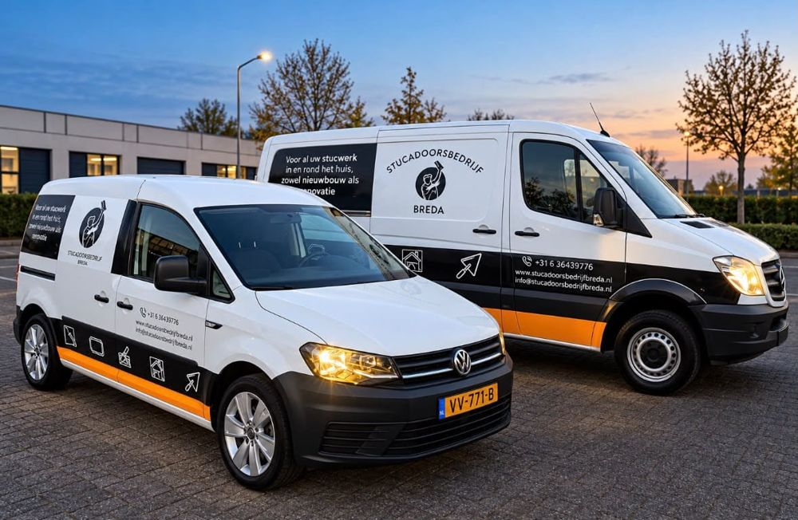

Binnen het afwerken en restaureren van uw muur of ruimte bieden wij een totaalpakket dat voorziet in al uw wensen en mogelijkheden.
Voor feilloos strak stucwerk bent u bij ons aan het juiste adres. Zo kunnen muren en plafonds geschilderd worden.
Maatwerk en het plaatsen van ornamenten en lijsten aan uw wanden en plafonds.
Restaureren van bestaand historisch stucwerk, met oog voor detail en authenticiteit.
Een gave natuurlijke betonlook voor wanden, vloeren, trappen en badkamers.
Geeft uw plafond een rustiek en stijlvolle uitstraling. Niet geschikt voor wanden.
Een korrelige, fraaie structuur. U kiest zelf de mate van gladheid.
Afwerken of volledig renoveren met sierpleister of een compleet gevelisolatiesysteem.
Duurzame sierpleister voor binnen en buiten, voor een nette wand.
In de afgelopen jaren hebben wij veel stucwerk verricht op zowel de particuliere als de zakelijke markt. Van huizen en kantoren tot winkelpanden. Wij werken met gediplomeerde vakmannen en zijn aangesloten bij de NOA, de Nederlandse Ondernemersvereniging voor Afbouwbedrijven.

Bel, app of vul het formulier in. Wij nemen zo spoedig mogelijk contact met u op.
Wij komen bij u langs om de ruimte te bekijken en u te adviseren.
Een duidelijke offerte en een plan van aanpak, zonder verrassingen.
We werken netjes, ruimen alles op en leveren pas op als u tevreden bent.